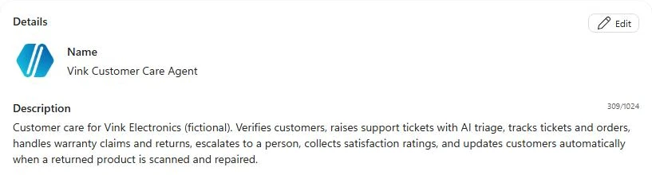
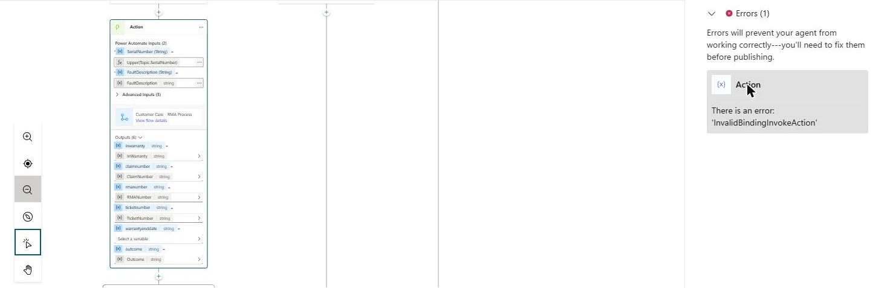

- Technical specification
- Vink Customer Care Agent · Overview
Vink Customer Care Agent: technical specification
This is the technical specification of the Vink Customer Care Agent, a personal Power Platform project built in my own developer environment with fictional data. It documents every component: what it is, how it's configured, what it reads and writes, what calls it, and how it connects to the rest. Each section shows real screenshots from the built solution and real test results.
Component inventory
| Layer | Component | Count | Specified in |
|---|---|---|---|
| Agent | Vink Customer Care Agent (generative orchestration) | 1 | Agent configuration |
| Agent | Custom topics | 11 | Topics |
| Agent | System topics (Escalate customised) | 9 | Topics |
| Agent | Regex entities: OrderNumber, TicketNumber, SerialNumber | 3 | Agent configuration #entities |
| Agent | Knowledge sources: policy PDF + 2 Dataverse tables | 3 | Agent configuration #knowledge |
| Agent | Child agent: Billing Agent | 1 | Agent configuration #child |
| Agent | Prompts: Ticket Triage, Fault Summary for Technicians | 2 | Agent configuration #prompts |
| Agent | Event trigger: Warehouse scan received | 1 | Background flows #warehouse-scan-received |
| Flows | Agent flows (tools, When an agent calls the flow) | 11 | Agent flows |
| Flows | Background flows (Dataverse and schedule) | 4 | Background flows |
| Data | Dataverse tables (Contact extended + 6 custom) | 7 | Data model |
| Data | Custom columns | 63 | Data model |
| App | Vink Care Hub (model-driven) | 1 | Care Hub app |
| ALM | Environment variables / connection references | 2 / 2 | ALM and operations |

Architecture: how the layers connect
Request path (chat)
Global.CustomerVerifiedEvent path (no chat)
Connection matrix 1: topics → agent flows
A dot means the topic calls the flow through an Action node. Flows with an empty column are called by the orchestrator or the event trigger, not by a topic.
| Topic | Add Customer Reply | Create Ticket | Escalate Ticket | Find Customer | Get Ticket Details | List Customer Orders | List Customer Tickets | RMA Process | Record CSAT | Register Customer | Repair Update |
|---|---|---|---|---|---|---|---|---|---|---|---|
| Identify Customer | ● | ● | |||||||||
| Main Menu | |||||||||||
| New Ticket | ● | ● | ● | ||||||||
| Check Ticket Status | ● | ● | ● | ||||||||
| Track an Order | ● | ||||||||||
| Warranty Claim | ● | ||||||||||
| Rate a Ticket | ● | ● | |||||||||
| Greeting | |||||||||||
| Goodbye | |||||||||||
| Start Over | |||||||||||
| Thank you | |||||||||||
| Escalate | ● | ● | ● |
Connection matrix 2: flows → tables
R = reads (List rows / Get a row), W = writes (Add / Update), T = the table whose change triggers the flow.
| Flow | Contact | Customer Order | Product | Service Ticket | Support Team | Ticket Update | Warranty Claim |
|---|---|---|---|---|---|---|---|
| Add Customer Reply | R/W | W | |||||
| Create Ticket | R | R | R/W | R | |||
| Escalate Ticket | R/W | W | |||||
| Find Customer | R | R | R | ||||
| Get Ticket Details | R | R | |||||
| List Customer Orders | R | ||||||
| List Customer Tickets | R | ||||||
| RMA Process | R | R/W | W | ||||
| Record CSAT | R/W | ||||||
| Register Customer | R/W | ||||||
| Repair Update | R/W | ||||||
| Daily SLA Check | R/W | ||||||
| Ticket Created | T/R/W | R | W | ||||
| Ticket Status Changed | T/R/W | W | |||||
| Warehouse scan received | T |
Shared state: global variables
Topics share the verified customer through global variables set by Identify Customer. Any topic that touches an account checks Global.CustomerVerified first.
| Variable | Set by | Read by |
|---|---|---|
Global.ContactId | Identify Customer | Check Ticket Status, Escalate, Identify Customer, New Ticket, Rate a Ticket, Track an Order, Warranty Claim |
Global.CurrentTicket | Check Ticket Status, Escalate, Identify Customer, Rate a Ticket | Check Ticket Status, Escalate, Identify Customer, Rate a Ticket |
Global.CustomerEmail | Identify Customer | Escalate, Identify Customer, New Ticket, Warranty Claim |
Global.CustomerFirstName | Identify Customer | Identify Customer, Main Menu |
Global.CustomerFullName | Identify Customer | Identify Customer, Warranty Claim |
Global.CustomerNumber | Identify Customer | Identify Customer |
Global.CustomerVerified | Identify Customer | Check Ticket Status, Escalate, Identify Customer, Main Menu, New Ticket, Rate a Ticket, Track an Order, Warranty Claim |
Global.IsVIP | Identify Customer | Identify Customer |
Known issues found while writing this spec
| # | Issue | Impact | Fix |
|---|---|---|---|
| 1 | Output schema drift on RMA Process. The flow returns warrantyenddate; the agent's saved tool definition still expects warrantyend. Topic checker: InvalidBindingInvokeAction. | Warranty Claim fails at Submit claim with FlowActionException, after the flow has already written the claim and ticket (TKT-1021 was created). | Refresh the flow in the tool, map warrantyenddate in the topic, republish. See Test results #warranty. |
| 2 | Both prompts use GPT-4.1 mini, which the prompt editor says is retired on 2026-12-07. | Prompts switch to the replacement model automatically. | Re-test both prompts on the new model before that date. |
| 3 | Rate a Ticket confirms twice (the topic's message and a generated follow-up). | Cosmetic. | End the topic after the confirmation message. |

warrantyenddate output.How to read this spec
| Page | Covers |
|---|---|
| 1 · Data model | Every custom column, type, choice value, autonumber format and relationship; business rules stored as data |
| 2 · Agent configuration | Instructions, orchestration settings, knowledge, entities, child agent, prompts with full text and real test output |
| 3 · Topics | Each topic: trigger description, inputs, globals, every node in order, flows called, canvas screenshots |
| 4 · Agent flows | Each tool flow: inputs, outputs, every action with its expression, tables, callers, designer screenshots |
| 5 · Background flows | Dataverse-triggered, scheduled and agent-trigger flows |
| 6 · Care Hub app | The staff app on the same tables |
| 7 · Build guide | Step-by-step rebuild order with a checkpoint after each step |
| 8 · Test results | Eight scenarios run in the test chat, with screenshots, expected vs actual |
| 9 · ALM and operations | Solution, environment variables, connection references, monitoring, source on GitHub |